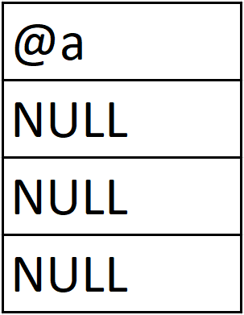

DIOS có nghĩa Dump In One Shot là các query giúp dễ dàng và nhanh chóng dump các data trong bảng trong một nốt nhạc. Trong phần này mình sẽ vừa đưa ra các query đáng chú ý và giải thích sơ lược. Bạn đọc nên tự mình thử các query vào database thật để hiểu một cách rõ ràng nhất
Khởi đầu cho phương pháp này chúng ta vẫn cần phải tìm số column được gọi trong query. Sau đó URL giả sử có dạng: worldend.com/store.php?id=1' and false union <Your Query Here>
Lưu ý toàn bộ các query bên dưới phải thêm chính xác số lượng cột như các bài học trước (select 1,2,3,...)
Sau đây là SQL query để lấy danh sách toàn bộ database:
@a có kí tự @ phía trước có nghĩa đó là một biến ta khai báo. Sau đó bên trong FROM @a được gán giá trị HEX 0x00 hay NULL, sau đó câu lệnh select (@a) from (information_schema.schemata) sẽ tạo một bảng ảo với một cột, các hàng đều mang cùng giá trị hiện tại của @a. Thực chất TABLE schemata đã được thêm một cột ảo, sau đó các hàng của cột ảo này được SELECT. Và mỗi lần đi qua một hàng @a sẽ được thêm data cần thiết bằng function CONCAT

Trong ảnh trên có tới 3 hàng vì ban đầu trong bảng schemata cũng
có 3 hàng ứng với 3 database mysql, information_schema và sukabase
Nên nhớ giới hạn kí tự là 1024 nên nếu muốn bypass bạn đọc xem lại phần trước
Query trên giúp lấy tên toàn bộ bảng trong tất cả database (ngoại trừ information_schema vì database này chứa quá nhiều bảng không cần thiết). Tuy nhiên nhìn như vậy chúng ta không thể biết bảng nào thuộc database nào, nên phải có cách hiệu quả hơn, đó là query bên dưới:
Kế đến chúng ta sẽ thêm cả danh sách các cột phía sau mỗi hàng chứa tên database và table như bên dưới:
Cuối cùng, ta có thể thêm option như chỉ in ra các bảng bắt đầu bằng suka chẳng hạn như bên dưới:
Nếu một website không chứa output cho truy vấn có nghĩa không thê sử dụng các phương pháp SQL Injection thông thường như Union, XPATH,... Khi đó có thể sẽ sử dụng được Blind SQL Injection. Bản chất của phương pháp này là chúng ta hỏi database system xem một truy vấn nào đó có đúng hay không. Điều kiện thực hiện được kiểu injection này là vẫn có thể exploit (sử dụng ',",...), giao diện website trả về đối với truy vấn true và false phải phân biệt được. Và vì sử dụng cách này rất tốn thời gian nên chúng ta chỉ nên lấy những data quan trọng cần tìm.
Vì cách này ít khi hữu dụng nên mình sẽ không nói chi tiết các bước, nếu muốn tham khảo sâu hơn, bạn đọc xem tại Here
Trong trường hợp không thể phân biệt được giao diện trả về query true và false những các điều kiện còn lại vẫn thoả mãn, chúng ta có thể sử dụng Time Based Blind Injection. Phương pháp này đơn thuần là xác định true hay false dựa trên thời gian load trang. Bạn đọc xem chi tiết tại Here